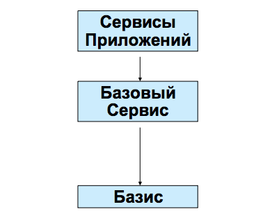
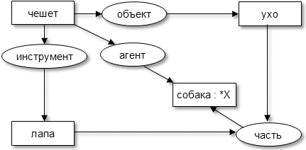

Web разрабатывался как информационное пространство, полезное не только для коммуникации человека с человеком, но и как пространство, в котором смогут эффективно сотрудничать и компьютеры. Одно из главных препятствий на пути к этому состоит в том, что большая часть информации в Web предназначена для ее понимания человеком. Очевидно, что такая структура данных не может быть понятной для просматривающего веб-робота. Подход Semantic Web базируется на разработке языков для выражения информации в форме, пригодной для машинной обработки.
Идея Semantic Web была предложена в 1998 году Тимом Бернерсом-Ли (Tim Berners-Lee), который является изобретателем WWW, URI, HTTP и HTML.
Semantic Web представляет собой сеть информационных узлов, которые связаны друг с другом таким образом, чтобы имеющаяся информация могла легко обрабатываться компьютером. Его можно рассматривать как эффективный способ представления данных во Всемирной паутине, или как глобально связанную базу данных. Данный проект предлагает реализацию полной системы по автоматизированному созданию и хранению семантического ядра контента, предоставленного во Всемирной паутине.
Проект Semantic Web – это попытка собрать все устоявшиеся идеи и сделать так, чтобы они смогли работать вместе внутри сети Интернет. Для достижения этой цели используются стандарты, которые разработаны не только консорциумом W3C, но и другими организациями. Цель проекта – разрешить взаимодействовать этим стандартам между собой внутри децентрализованной системы без вмешательства человека.
Проект Semantic Web, начатый в 2001 году, на данный момент находится в стадии активной разработки, старается интегрировать в себя все уже имеющиеся на данный момент подходы, с целью создать действительно универсальное средство семантического поиска информации. Большое внимание отводится архитектуре и модели распределенной среды, архитектуре метаданных. Как сказано в определении, которое предоставлено на домашней странице проекта – «Semantic Web является абстрактным представлением данных во Всемирной паутине, которое базируется на стандартах RDF и других стандартах, имеющих распространение. Проект разрабатывается Консорциумом W3C в содружестве с большим количеством исследователей, ученых и промышленных партнеров».
«Semantic Web – это расширения текущего Web, в котором информация предоставляется с хорошо определенным значением, которое лучше разрешит компьютерам и людям работать вместе. Его идея в том, чтобы иметь данные в Web, определенные и связанные между собой таким образом, чтобы их можно было использовать для более эффективного исследования, автоматизации, интеграции и повторного использования в разных приложениях... эти данные могут быть общедоступными и обрабатываемыми автоматическими средствами так же, как и людьми».
В рамках данного проекта задействованы такие передовые технологии, как агентно-ориентированный подход в программировании – проект DAML+OIL (DARPA Agent Markup Language + The Ontology Inference Layer) , онтологии , XML, RDF, и др. В настоящее время распространяется использование Web-агентов (в упрощенном виде веб-сервисов), которые разрабатываются как для частных задач, так и для создания ядра Semantic Web.
Как указал профессор Джон Сова, – Semantic Web – много-дисциплинарная тема, которая объединяет теории и методы трех областей:
Интернет – это сеть компьютеров, объединенных каналами и использующие протоколы (TCP/IP) для связи между собой. Web – это сеть сайтов, использующих гиперссылки для переходов между страницами. Традиционный Web базируется на языке разметки документов HTML. HTML-страница описывает форму представления информации в Web-броузере, а этот язык тяжело подвергается автоматическому содержательному анализу. Автоматизировать даже такие тривиальные задачи, как поиск людей, проектов, программ в Интернете невозможно. Следующий этап развития Интернет – Semantic Web – представляет собой переход на новый уровень представления данных – уровень знаний и автоматизированной обработки. Технология Semantic Web разрешит компьютеру интерпретировать информацию, представленную в Web, наравне с людьми, для чего разработана графовая модель описания ресурсов RDF (Resource Description Framework).
В общем виде Semantic Web (по Тиму Бернерсу-Ли) – это:

Рисунок. 1. Три яруса сети Semantic Web
Технологии, которые задействованы в разработке Semantic Web:
В 1998 году Тим Бернерс-Ли предложил следующий логический план построения Semantic Web:
Базовая модель Semantic Web (пирог Тима) в редакции 2006 года показана на рис. 2.
Рисунок 2. Базовая модель Semantic Web в редакции 2006 года
Фундаментальными основами Semantic Web являются:
Рассмотрим структуру базовой модели Semantic Web более детально.
В Web для идентификации элементов используются "Унифицированные идентификаторы ресурсов", или сокращенно URI (Uniform Resource Identifier).
URI можно присвоить чему угодно, и если эта сущность имеет URI, то о ней можно говорить, что она находится "в Web": это может быть человек, книга, абстрактная концепция, т.е. все, что имеет название.
URI является базисом Web. «URI – это компактная строка символов, которая используется для идентификации абстрактного или физического ресурса».
Одной из форм URI есть URL (Uniform Resource Locator), унифицированный указатель ресурса. URL это адрес, по которому загружаемся Web-страница.
Также необходимо указать, что в начальной базовой модели в нижнем ярусе было указано еще и базовое кодирование – т.е. общий для всех принцип кодирования всех возможных символов многих языков – кодовая таблица UNICODE. За синтаксисом URI следит комитет IETF. Документ, который опубликованный этим комитетом RFC 2396 является общей спецификацией URI. Консорциум W3C поддерживает список схем URI.
В 2005 году на смену URI был предложен интернационализированный идентификатор ресурса – Internationalized Resource Identifiers (IRI), идентифицирующий абстрактный или физический ресурс на любом языке мира. URI могут содержать только латинские символы и знаки препинания из набора символов US-ASCII (в общей сложности около 60 символов). Для обеспечения принципов интернационализма, сохранения «читабельности» для человека, в IRI было предложено, что эти идентификаторы могут содержать любые символы Юникода (Unicode/ISO10646) в чистом виде, без всякого кодирования. IRI не ущемляют права вторых языков и ведут к более высокой степени равноправия пользователей Интернет. В будущем идентификаторы IRI призваны заменить URI.
XML (eXtensible Markup Language) представляет собой очень простой и при этом мощный, и гибкий текстовый формат для описания документов произвольной структуры. XML был разработан и утвержден в качестве стандарта в 1998 г Консорциумом W3C для упрощения реализации, а также для обеспечения интероперабельности между SGML и HTML. Он является подклассом языка SGML, однако более прост для понимания и обработки.
Функции XML следующие:
Для описания предметной области ресурсов предложен стандарт RDF (Resource Description Framework), принятый в 1999 году консорциумом W3C и поддержанный многими ведущими производителями ПО, и поставщиками контента. Начальное назначение RDF было в описании XML-ресурсов с разных точек зрения. RDF представляет собой модель описания метаданных. Этот язык использует XML-синтаксис.
В то время, как модель данных XML является графом с обозначенными вершинами и не обозначенными дугами (т.е. без связей), модель данных RDF является графом с обозначенными как вершинами, так и дугами, который разрешает определять связи между сущностями.
Модель Resource Description Framework имеет своей целью стандартизировать определение и использование метаданных, которые описывают ресурсы Web. Однако, RDF также хорошо подходит и для представления данных. Стандарт RDF (Resource Description Framework) включает две основные части – собственно способ описания ресурсов, а также способ задачи схем, по которым ресурс описывается.
Первая часть RDF определяет простую модель для описания объекта, который рассматривается в качестве ресурса, как связей между ресурсами в терминах поименованных свойств и значений.
Вторая (RDF Schema – RDFS) служит для задачи структуры предметной области и аналогична диаграмме классов в UML. На RDF можно описывать как структуру ресурса, так и связанную с ним предметную область.
RDF описывает ресурсы в виде ориентированного размеченного графа – каждый ресурс может иметь свойства, которые в свою очередь также могут быть ресурсами или их коллекциями. Базовый строительный блок в RDF – это тройка «объект – атрибут – значение», который часто записывают в виде A(O,V), т.е. «объект O имеет атрибут A со значением V». Такую связь можно также представить как ребро с меткой A, которое объединяет два узла, O и V: [O] – A –> [V]. Такая нотация довольно полезна, поскольку RDF разрешает менять местами объекты и значения. Таким образом, каждый объект может играть роль значения, которое в графическом представлении отвечает цепочке из двух ребер с метками.
Кроме всего вышеупомянутого, RDF допускает форму представления, в которой любое выражение RDF в тройке может быть объектом или значением, т.е. графы могут быть как вложенными, так и линейными. В Web это разрешает, например, выражать сомнение или согласие с выражениями, созданными другими людьми.
Главная цель RDF – предложить базовую модель данных «объект – атрибут – значение» для метаданных. Кроме этой семантики, которая описана в стандарте лишь неформально, RDF не содержит каких-либо четких правил, ориентированных на моделирование данных. Также, как XML Schema используется для определения словаря, RDF Schema разрешает разработчикам определять конкретный словарь для данных RDF (такой, как authorOf) и указывать виды объектов, к которым могут применяться эти атрибуты. Другими словами, механизм RDF Schema предоставляет базовую систему типов для моделей RDF.
Таким образом, RDF предоставляет возможность формулировать утверждения в виде, пригодном для обработки компьютером и это является основой Semantic Web.
В базовой модели Semantic Web, вышепредставленной, предложенной Тимом Бернерсом-Ли, явно не выделено наличие средств описания метаданных. Метаданные это данные о данных. Более точно, это данные, предназначенные для идентификации, описания или локализации (местоположения) информационных ресурсов, независимо от физической природы ресурса.
Было разработано множество схем описания метаданных, среди которых следует упомянуть следующие:
FOAF (Friand-Of-A-Friend) – это формат машинно-обрабатываемых страниц, описывающих персональную информацию о людях и их деятельности (фотографии, календари, блоги и прочее) в формате XML. SIOC (Semantically-Interlinked Online Communities)– документы, описывающие онлайн-сообщества.
SIOC обеспечивает взаимосвязь таких средств обсуждения информации, как блоги, форумы и почтовые рассылки между собой.
Description of a Project Description of a Project (DOAP) – документы, описывающие в сети проекты с открытым исходным кодом.
Среди данных стандартов выделяется Dublin Core, как один из базовых стандартов для представления данных об информационных ресурсах в Semantic Web.
Dublin Core – набор элементов (свойств) для описания документов, который первоначально был разработан в марте 1995 года. Цель Dublin Core – обеспечение минимального набора элементов описания, которые оказывают содействие внедрению описания и автоматической индексации документоподобных сетевых объектов по принципу, подобному карточкам библиотечного каталога. Набор метаданных Dublin Core предназначался для использования средствами исследования ресурсов Интернета, такими как веб-кроулеры поисковых систем, а также предполагалось, чтобы Dublin Core был достаточно простым набором для понимания и использование широким кругом авторов и случайных публикаторов, которые размещают информацию в Интернете. Элементы Dublin Core широко используются в документировании Интернет-ресурсов.
Расширять сам набор элементов можно как самостоятельно, так и с использованием уже имеющихся стандартов. Например, для описания людей и организаций (которые выступают в качестве элементов матаданных Dublin Core: Creator, Publisher или Contributor) можно применить стандарт для электронных бизнескарт (vCard)
Как отмечается в официальном описании RDF, метаданные могут быть встроенными (embedded) в сам ресурс, например, в HTML страницы или документы, например, MsWord (это простейший подход для описания страниц), а могут сохраняться и обновляться независимо от ресурсов. Многие из производителей программного обеспечения уже выпускают ряд продуктов, которые автоматически формируют некоторый небольшой блок RDF-описания внутри документа. Второй подход является более универсальным, так как в этом случае метаданные могут быть созданы для любого ресурса. В настоящее время уже начат проект на базе Open Directory (поисковая система Google) по автоматическому созданию репозитория RDF-описаний ресурсов Интернет.
В случае размещения метаданных отдельно от ресурса, сами метаданные преимущественно сохраняются (и передаются) в формате XML. При этом максимально используются возможности модели RDF и обеспечивается свободный обмен информацией (interoperability). Обмен метаданными сводится к пересылке RDF/XML-файлов (т.е. текстовых файлов в формате XML или просто ссылок на эти файлы), т.е. может быть полностью автоматизирован.
Онтологии, в общем виде определяются как совместно используемые формальные концепции конкретных предметных областей, они дают общее представление о понятиях, информацией из которых могут обмениваться люди и приложения. Они разрешают концептуализировать домен фиксированием сущностей (entities) и связей в домене. Указание в каких связях принимает участие сущность частично разрешает понять и ее значение (содержание), поскольку это предоставляет возможность видеть, где данная сущность входит в отношения с другим доменом.
Онтологии основываются на математическом аппарате формальной логики (descriptive logic, DL), малое подмножество которого охвачено RDF-схемой. DL является подмножеством логики первого порядка, которое вычислимо.
Дополнительные возможности, вышеуказанные, в дополнении к имеющимся в RDF, является целью онтологических языков, таких, как DAML+OIL и OWL. Данные два языка основаны на RDF и RDF Schema. Цель данных языков – обеспечение ресурсов дополнительной машинно-обрабатываемой семантикой, т.е. они направлены на обеспечение машинного представления ресурсов в форме, которая более соответствует их оригиналу из реального мира.
Разметка документов Semantic Web с помощью онтологических терминов позволит производить автоматическую обработку их контента. Таким образом, онтологии определяются как ключевая технология для развития Semantic Web.
Онтологии в состоянии сыграть критически важную роль в организации обработки знаний на базе Web, их общего использования и обмена ими между приложениями.
Язык DAML (DARPA Agent Markup Language 2000 год) был разработан агентством передовых оборонных исследовательских проектов (Defense Advanced Research Projects Agency) как расширение XML и RDF. Последняя версия языка DAML+OIL обеспечивает большой набор конструкций для создания онтологий и разметки информации таким образом, чтобы компьютеры были способны их прочитать и понять. В этой связи необходимо также упомянуть еще одну разработку DARPA – язык DAML-S – Semantic Markup for Web Services.
DAML+OIL является языком семантической разметки для Веб-ресурсов. Он основывается на ранних стандартах W3C таких, как RDF и RDF Schema, и расширяет эти языки более полными примитивами моделирования. DAML+OIL обеспечивает примитивы моделирования, которые по обыкновению используются в языках, основанных на фреймах. Онтология DAML+OIL (или база знаний, knowledge base) есть коллекция RDF – троек. Онтология, как правило, содержит иерархию понятий предметной области и описывает важные свойства каждого понятия с помощью механизма «атрибут – значение». Связи между понятиями могут быть описаны с помощью дополнительных логических утверждений.
Язык OWL. Наиболее развитым языком представления онтологий в настоящее время является OWL (Web Ontology Language), который расширяет возможности XML, RDF, и RDF Schema. Этот язык основан на DAML+OIL. Проблемы, которые возникли в DAML+OIL, были вызваны постоянным изменением ядра спецификаций RDF, на котором основан DAML+OIL.
Как указывается в основном рабочем проекте, OWL почти полностью похож на DAML+OIL. Основные и существенные отличия от DAML+OIL состоят в следующем:
Существует также несколько маловажных расхождений, которые включают в себя некоторые изменения имен некоторых конструкций, однако основная цель, преследуемая при создании OWL, заключалась в том, чтобы максимально корректно сохранить имена DAML+OIL. Онтология OWL является последовательностью аксиом и фактов с добавлением ссылок на другие онтологии, которые считаются включенными в онтологию. Онтологии OWL являются Web-документами и на них можно ссылаться. Онтологии также имеют не связанную с логикой компоненту (пока еще не определенную), что может быть использовано для записи авторства, и другая не связанная с логикой информация, ассоциированная с онтологией. Фактически это словарь, который расширяет набор терминов, определенных в RDFS.
Принцип "логического вывода" очень простой: это возможность выводить новые данные из данных, которые уже есть. В математическом смысле, выполнение запроса является одной из форм логического вывода (например, возможность вывести из массы данных некоторый результат поиска). Логический вывод является одним из ведущих принципов Semantic Web, так как он разрешает очень легко создавать SW-приложения.
Для того, чтобы Semantic Web стал довольно выразительным и смог помогать людям в разных ситуациях, возникает необходимость построения мощного логического языка, который поддерживает логический вывод. Дискуссии относительно методов, и даже возможности выполнения этой задачи, до сих пор ведутся очень активно; обращается внимание на то, что в RDF недостаточны возможности квантификации, и что эта область определена недостаточно хорошо. Проблемы логики предикатов подробно рассмотрены в базовой монографии Джона Сова (John Sowa's) «Математические предпосылки (логика предикатов)» – «Mathematical Background (Predicate Logic)» [89].
Rule Interchange Format (RIF) – формат обмена правилами. Цель этого разрабатываемого консорциумом W3C стандарта – определение формата, который бы разрешил транслировать правила между разными языками правил и благодаря этому обеспечить обмен правилами между системами, основанными на правилах.
Системы, основанные на правилах, получили широкое распространение в информационных технологиях. К их числу относятся, например, экспертные системы и системы дедуктивных баз данных. Разработки технологий Semantic Web обеспечивают новую среду использования таких систем. Поэтому консорциум W3C уделяет отдельное внимание этой области. Спецификация RIF может рассматриваться как составная часть комплекса стандартов Semantic Web.
В настоящее время рабочей группой, организованной при консорциуме для разработки этого стандарта, подготовлен и обсуждается рабочий проект документа, который систематизирует случаи использования RIF и требования к этому языку. Важнейшее требование к создаваемому стандарту – обеспечение возможности его использования не только при текущем состоянии технологий, основанных на правилах, но и его гибкости, достаточной для обеспечения его использования в процессе их эволюции.
Рабочий проект документа, который описывает случаи использования, даст возможность определить функциональные требования к RIF и на этой основе разработать адекватные спецификации языка.
Правила вывода новых фактов SWRL. Благодаря дополнению OWL языком RuleML (подмножество Datalog) в виде словаря SWRL (A Semantic Web Rule Language) появилась возможность использовать дизъюнкты Хорна (Horn-like rules) для явного указания способа вывода новых фактов из RDFутверждений. Пока словарь SWRL находится в стадии стандартизации.
Хотя работы над этим уровнем Semantic Web продолжаются, однако в нашем распоряжении есть уже достаточный набор средств для построения Semantic Web: утверждение, цитирование (материализация) в RDF, классы, свойства, области, документирование в схеме RDF, непересекающиеся классы, свойства однозначности и уникальности, типы данных, инверсии, эквивалентности, списки и прочее.
Следующий шаг в разработке Semantic Web – доверие и доказательство. Об этом уровне написано очень мало, что является недопустимым, так как в будущем он будет очень важным. Для обеспечения целостности и непротиворечивости информации, представленной в Semantic Web, важно обеспечить связь приложений Semantic Web с контекстом, а также механизмы проверки доказательства и цифровых подписей.
Приложения Semantic Web будут учитывать контекст в целом для того, чтобы сообщать пользователям, могут ли они доверять предоставленным данным. Если пользователь получает поток RDF-данных от другого пользователя о прочитанной им книге и о его оценке этой книги, то он должен знать, кто этот человек, и можно ли доверять этой информации. Более того, пользователь может потом воспользоваться этой информацией, не сомневаясь в ее источнике. Далее пользователь оставляет на свое собственное усмотрение насколько ему верить полученному критическому отклику о книге.
Необходимо помнить и о том, что над разделяемыми контекстами работают также и группы людей. Если какая-то группа разрабатывает в Semantic Web информационную службу для художников, каталогизируя людей, их имена и места, где находятся картины этих людей, то доверие пользователя к этой группе зависит от того, насколько он доверяет людям, которые принимают участие в этой группе.
В связи с этим в Semantic Web для определения источника информации предлагается использовать цифровые подписи.
Цифровые подписи это есть небольшие фрагменты кода, которые можно использовать для однозначной проверки того, кто написал тот или другой документ. Основанная на работах по математике и криптографии, цифровая подпись является доказательством того, что документ или утверждение написал (или с ним согласен) определенный человек. Разработчики Semantic Web планируют, что каждый пользователь или агент все свои RDF-утверждения будет подписывать персональной уникальной цифровой подписью.
Еще одним аспектом доверительности информации является проверка истинности. Язык проверки истинности это просто язык, который позволит проконтролировать, является или нет утверждение правдивым. Реализация языка проверки обычно составляется из списка "элементов" логического вывода, которые используются для получения искомой информации, а также для последующей проверки информации о доверии для каждого из этих элементов.
Ведущую роль в Semantic Web должны сыграть программные агенты. При вышеописанной архитектуре информационного пространства, предполагается, что агенты, обладающие интеллектуальными способностями, смогут выполнять поставленные им пользователями цели и задачи самостоятельно. Например, по поиску необходимой информации, подбору и выбору оптимальных вариантов и т.п. Это в перспективе мобильные, интеллектуальные агенты, способные к целеполаганию, планированию, совместному взаимодействию с другими агентами для достижения цели, имеющими знания как о себе, так и о внешнем мире. Для достижения поставленных задач они должны иметь возможность пользоваться некоторыми стандартными наборами услуг, представленными в Web в качестве веб-сервисов.
Веб-сервис – это программная система, предоставляющая некоторую услугу и обеспечивающая взаимодействие по сети. Обычно это веб-ресурс, характеризующийся абстрактным набором функциональных возможностей, которые в нем реализуются. Функционально веб-сервис может являться агентом, а может быть обычной программой.
Определение веб-сервиса, данное в википедии следующее: это «программная система, идентифицируемая строкой URI, чьи общедоступные интерфейсы определены на языке XML. Описание этой программной системы может быть найдено другими программными системами, которые могут взаимодействовать с ней согласно этому описанию посредством сообщений, основанных на XML, и передаваемых с помощью интернетпротоколов.»
Архитектура веб-сервисов базируется на компонентном подходе, т.е. сервис должен быть достаточно автономным, а также может состоять из нескольких сервисов, подбираемых динамически для выполнения конкретной задачи в соответствии с различными критериями.
Немаловажным аспектом при выборе сервиса является его доступность. Интернет представляет собой динамичную среду, и вопрос доступности ресурса или сервиса является очень актуальным. При проектировании композиции сервисов очень важно учитывать данный аспект.
Задача построения новых сервисов из уже имеющихся поднимает проблему синтеза сервисов.
Для того, чтобы воспользоваться услугами, должна быть возможность их обнаружения, механизм получения информации о том, какие услуги они предоставляют, как к ним обращаться, формат сообщений. Решением этой задачи стало создание каталогов услуг с помощью стандартных методов доступа. Сервисы должны быть описаны в стандартных терминах, а информация о том, как к ним обращаться и другая имеющаяся информация должна кодироваться стандартным способом. Технология веб-сервисов базируется на следующих открытых XML-стандартах:
Cyc — проект по созданию объёмной онтологической базы знаний, позволяющей программам решать сложные задачи из области искусственного интеллекта на основе логического вывода и привлечения здравого смысла.
Проект начал Дуглас Ленат в 1984 году в Microelectronics and Computer Technology Corporation. Название «Cyc» (образованное от англ. encyclopedia: «сайк») является зарегистрированной торговой маркой компании Cycorp, Inc в Остине, которой управляет Ленат и созданной для разработки Cyc.
База знаний является собственностью компании, однако небольшая часть базы, предназначенная для установления общего словаря для программ автоматического рассуждения, была выпущена как OpenCyc под открытой лицензией. Позднее Cyc стала доступной для исследователей ИИ под специальной исследовательской лицензией ResearchCyc.
Типичным примером знаний в базе являются «Всякое дерево является растением» и «Растения смертны». Если спросить «умирают ли деревья?», машина логического вывода может сделать очевидный вывод и дать правильный ответ. База знаний (англ. Knowledge Base или KB) содержит более миллиона занесённых туда людьми утверждений, правил и общеупотребительных идей. Они формулируются на языке CycL, который основан на исчислении предикатов и имеет схожий с лиспом синтаксис. Англоязычные пользователи шутят, что они «велосипедисты» (от англ. cyclist — велосипедист).
Большая часть сегодняшней работы в проекте Cyc всё ещё связана с инженерией знаний — описание фактов об окружающем мире вручную и реализация эффективных механизмов логического вывода на основе этих знаний. Однако ведётся работа над тем, чтобы дать системе Cyc возможность самостоятельно общаться с пользователями на естественном языке, и над ускорением процесса пополнения базы с помощью машинного обучения.
Концепции в Cyc называются константами. Имена констант начинаются с необязательных символов «#$» и чувствительны к регистру. Существуют константы для:
Наиболее важными предикатами являются #$isa и #$genls. Первый является утверждением, что некий элемент является экземпляром некой коллекции, а второй — что коллекция является подколлекцией другой коллекции. Факты о концепциях декларируются с помощью особых высказываний языка CycL. Предикаты записываются в скобках перед своими аргументами:
(#$isa #$BillClinton #$UnitedStatesPresident)
означает, что «Билл Клинтон входит в совокупность президентов США»
База знаний Cyc разделена на микротеории (Mt), коллекции концепций и фактов, принадлежащих одной конкретной области знаний. В отличие от полной базы знаний, всякая микротеория должна быть свободной от противоречий. Всякая микротеория имеет название, которое является обычной константой; по соглашению константы микротеорий содержат строку «Mt». Пример — #$MathMt, микротеория, содержащая математические знания. Микротеории могут наследоваться одна от другой и организованы в иерархию: одной из специализаций #$MathMt является #$GeometryGMt — микротеория о геометрии.
Последняя версия OpenCyc, 1.0 была выпущена в июле 2006 года. OpenCyc 1.0 включает в себя полную онтологию Cyc, содержащую сотни тысяч выражений, миллионы утверждений, связывающих термы между собой. База знаний содержит 47 000 концепций и 306 000 фактов, и её можно просмотреть на сайте OpenCyc. Первая версия OpenCyc была выпущена в мае 2001 года и содержала только 6000 концепций и 60 000 фактов. База знаний выпущена под лицензией Apache. Cycorp намерена выпускать OpenCyc под параллельными, менее жёсткими лицензиями, чтобы удовлетворить потребности своих пользователей. Интерпретатор CycL и SubL (программа, которая позволяет просматривать и изменять базу данных и делать выводы) выпущена бесплатно, но только в двоичном виде, без исходных текстов. Она работает как под GNU/Linux, так и под Microsoft Windows.
В июле 2006 года Cycorp выпустила ResearchCyc 1.0, бесплатную (но с закрытыми исходниками) версию Cyc, предназначенную для исследовательского сообщества. (ResearchCyc находился в стадии бета-версии в течение всего 2004 года, а выпущена в бета-тестирование он был в феврале 2005.) В дополнение к таксономической информации из OpenCyc, ResearchCyc включает значительно больше семантических знаний (то есть дополнительные факты) о концепциях в своей базе знаний, и включает большой лексикон, инструменты для грамматического разбора и генерации английского языка, написанные на языке Java интерфейсы для редактирования знаний и создания запросов к базе.
Cycorp публично выразила своё намерение выпустить все термы и таксономические взаимосвязи, содержащиеся в ResearchCyc, как часть OpenCyc, и это было сделано в версии 1.0. Одна из указанных целей — создать полностью свободный и неограниченный семантический словарь для использования в семантической паутине. Таксономия OpenCyc доступна в формате Owl на сайте проекта OpenCyc.
Cyc описывают как «одно из наиболее противоречивых начинаний в истории искусственного интеллекта», так что он неизбежно получил свою долю критики.
Данные вопросы обсуждались в разных местах с момента запуска проекта. Даг Ленат и другие опубликовали множество аргументов в защиту своего проекта.
Семантическая сеть — информационная модель предметной области, имеющая вид ориентированного графа, вершины которого соответствуют объектам предметной области, а дуги задают отношения между ними. Объектами могут быть понятия, события, свойства, процессы. Таким образом, семантическая сеть является одним из способов представления знаний. В названии соединены термины из двух наук: семантика в языкознании изучает смысл единиц языка, а сеть в математике представляет собой разновидность графа — набора вершин, соединенных дугами, которым присвоено некоторое число. В семантической сети роль вершин выполняют понятия базы знаний, а дуги (причем направленные) задают отношения между ними. Таким образом, семантическая сеть отражает семантику предметной области в виде понятий и отношений.
Основной формой представления семантической сети является концептуальный граф. Понятия семантической сети записываются в овалах или прямоугольниках и соединяются стрелками с подписями — дугами. Это наиболее удобно воспринимаемая человеком форма. Её недостатки проявляются, когда мы начинаем строить более сложные сети или пытаемся учесть особенности естественного языка. Схемы семантических сетей, на которых указаны направления навигационных отношений, называют картами знаний, а их совокупность, позволяющая охватить большие участки семантической сети, атласом знания.
Концептуальный граф – это двудольный ориентированный граф, состоящий из вершин двух типов: понятий (англ. concept) и концептуальных отношений (англ. conceptual relation). Напомним, что двудольный граф – это граф, множество вершин которого можно разбить на две части таким образом, что каждое ребро графа соединяет какую-то вершину из одной части с какой-то вершиной другой части, то есть не существует ребра, соединяющего две вершины из одной и той же части.
Рисунок 3. Двудольный граф
Понятия в концептуальных графах отображаются прямоугольниками, отношения между ними – эллипсами. В отличие от семантических сетей отношение между понятиями отображаются не именованной дугой графа, а вершиной соответствующего типа, которая связывает два понятия дугами без метки. Пример «Маша укрепила стул клеем» в виде концептуального графа будет выглядеть следующим образом.
Рисунок 4. Пример концептуального графа
Авторы первых семантических сетей не уделяли должного внимания к четкому семантическому разделению отношений вида «класс - подкласс» («множество» - «подможество») и «класс» - «экземпляр» («множество» - «элемент»). Например, отношения, характеризующие свойства и поведение класса («млекопитающие»), могут отличаться от отношений подкласса («собака»), также как отношения подкласса («собака») от отношений конкретного экземпляра («Тузик»). Графического или символьного выделения таксономии (иерархии) понятий в семантических графах не предусмотрено. В концептуальных графах внутри вершины, обозначающей понятие, можно указывать имена его типа и экземпляра (разновидности типа). Например, «персона : Маша», «млекопитающее : собака» или «собака : Тузик».
При описании конкретных, но неименованных (анонимных) экземпляров, используется маркер «#». Например, «персона : #1234» или «собака : #4321». Использование анонимных экземпляров позволяет упростить описание и представление предметной области (базы знаний), как набора концептуальных графов. В частности, факт, что три собаки «Тузик», «Мухтар» и «Байкал» черного цвета можно описать вместо одного графа двумя.
Рисунок 5. Пример использования анонимных экземпляров
Вместо обращения к экземпляру по имени можно использовать маркер «*», обозначающий любой экземпляр типа. Т.о., имена понятий «собака» и «собака : *» являются эквивалентными. Дополнительно к обобщающему маркеру «*» допускается использование переменных для более упрощенного и наглядного отображения графов. В частности, для минимизации пересечений и поворотов стрелок. Например, факт «Собака чешет лапой ухо» может выглядеть следующим образом.
Рисунок 6. Пример использования переменной
База знаний представляет собой набор концептуальных графов. Каждый отдельный граф представляет собой один факт (высказывание, правило) из предметной области, описываемый через ассоциативные отношения между понятиями. Для представления второго базового механизма структурирования знаний – обобщения понятий – в теории концептуальных графов используются иерархии типов. Отдельная иерархия представляется в виде решетки, описывающей таксономические отношения (отношения наследования) между понятиями, включая множественное наследование.
Для представления иерархии типов в виде решетки в нее включается два специальных типа:
Рисунок 7. Пример иерархии типов геометрических фигур
Иерархии типов позволяют описать статическую составляющую предметной области, а непосредственно концептуальные графы как статическую, так и динамическую. Теория концептуальных графов предусматривает четыре вида операций, позволяющие создавать новые графы на основе существующих. К ним относятся:
Рисунок 8. Пример объединения двух графов
Рисунок 9. Пример применения операции «ограничение»

Рисунок 10. Пример применения операции «упрощение»
В дополнение к возможности определения отношений между понятиями предметной области, выраженными в одном высказывании, с помощью концептуальных графов можно выражать отношения между высказываниями. Например, предложение: «Вася предполагает, что Маша любит мороженное». Здесь «предполагает» является отношением между субъектом «Вася» и высказыванием «Маша любит мороженное». Все предложение целиком является высказыванием о высказывании (метавысказыванием).
В формализме концептуальных графов выделяется особый класс понятий - утверждение (англ. proposition). Понятие «утверждение» включает в себя один или несколько концептуальных графов, что и позволяет определять метавысказывания. Визуально «утверждение» выражается в виде прямоугольника, внутри которого располагаются другие концептуальные графы.
Рисунок 11. Пример метавысказывания
Помимо отображения высказываний в виде графов, наиболее наглядной и доступной для понимания форме, они могут быть выражены в т.н. линейной форме. При этом понятия заключаются в квадратные скобки, а отношения – в круглые:
[персона : Вася] <– (агент) <– [предполагает] –> (объект) –>
[[персона : Маша] <– (агент) <– [любит] –> (объект) –> [мороженное]].
При наличии более, чем двух дуг, соединяющих понятие или отношение с другими, они перечисляются через «-». Например, для графа на рис. 9 линейная форма
[Маша] <– (агент) <– [укрепить] –
–> (время) –> [прошедшее]
–> (объект) –> [стул]
–> (инструмент) –> [клей].
Аналогичный подход используется, если в графе имеются контуры:
[собака : *X] –
<– (агент) <– [чешет] –
–> (объект) –> [ухо]
–> (инструмент) –> [лапа]
<– (часть) –
<– [ухо]
<– [лапа].
Существуют и другие способы текстово-символьного описания концептуальных графов. В частности в международном стандарте «ISO/IEC IS 24707:2007. Information technology - Common Logic (CL): a framework for a family of logicbased languages» («Информационная технология - Общие положения: Основы семейства логически-ориентированных языков») дается описание языка CGIF (Conceptual Graph Interchange Format, формат обмена концептуальными графами).
Технология OSTIS - это открытый проект, направленный на создание массовой семантической технологии компонентного проектирования интеллектуальных систем различного назначения.
Цели проекта OSTIS:
Особенности проекта OSTIS:
Модель интеллектуального решателя задач
В предлагаемом подходе к преодолению приведенных проблем решатель задач рассматривается в неклассическом варианте. В данном случае решатель задач представляет собой графодинамическую sc-машину (память в качестве модели представления знаний использует семантическую сеть), состоящую из двух частей:
Система операций является агентно-ориентированной и представляет собой набор sc-агентов, условием инициирования которых является появление в памяти системы некоторой определенной конструкции. При этом операции взаимодействуют между собой через память системы посредством генерации конструкций, являющихся условиями инициирования для другого агента. При таком подходе становится возможным обеспечить гибкость и расширяемость решателя путем добавления или удаления из его состава некоторого набора операций. Более подробно процесс проектирования операций и предъявляемые к ним требования рассмотрены в соответствующем разделе.
Отличительной особенностью решателя задач как многоагентной системы в рамках данного подхода является принцип взаимодействия операций-агентов. Агенты обмениваются сообщениями исключительно через общую память путем использования соответствующего языка взаимодействия (языка вопросов-ответов), в отличие от большинства классических многоагентных систем, в которых агенты обмениваются сообщениями непосредственно друг с другом. В рассматриваемом подходе каждый агент, формулируя вопросную конструкцию в памяти, априори не знает, какой из агентов будет обрабатывать указанную конструкцию, а лишь дожидается появления в памяти факта окончания обработки вопроса. При этом в решении поставленной таким образом задачи может принимать участие целый коллектив агентов. Аналогичным образом, реагируя на появление некоторой конструкции в памяти, агент в общем случае не знает, кто из его коллег поставил данный вопрос, а лишь может проверить соответствие сгенерированной конструкции своему условию инициирования. В случае наличия такого соответствия, агент начнет обработку указанного вопроса (решение поставленной задачи), и в результате работы сгенерирует некоторый ответ на поставленный вопрос.
Проверка соответствия сгенерированного вопроса условиям инициирования агентов происходит следующим образом: автору вопроса после его формулирования необходимо инициировать данный вопрос (включить его во множество инициированных вопросов). После инициирования вопроса каждый из агентов, работающих в памяти, переходит в активное состояние и начинает проверку условия инициирования. При этом проверка начинается с наиболее уникальных фрагментов условия (например, типа вопроса) с целью оптимизации данного процесса. В случае установления факта изоморфности вопросной конструкции и условия инициирования агент начинает решение поставленной задачи, в противном случае агент переходит в состояние пассивного ожидания.
Описанная модель взаимодействия агентов в общей памяти позволяет обеспечить максимальную расширяемость системы агентов и предельно упростить процесс добавления новых агентов в уже имеющийся коллектив.